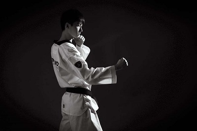

跆拳道以其变幻莫测，优美潇洒的腿法著名于世，被世人称为踢的艺术，这是跆拳道区别于其它格斗术的一个重要特点。跆拳道的腿法讲究变化多样和灵活多 端，对人体的柔韧性，大脑反应的灵敏性，身体运动的稳定性都有很高的要求，它是对人体机能和体能的综合考验。
跆拳道以其变幻莫测，优美潇洒的腿法著名于世，被世人称为踢的艺术，这是跆拳道区别于其它格斗术的一个重要特点。跆拳道的腿法讲究变化多样和灵活多 端，对人体的柔韧性，大脑反应的灵敏性，身体运动的稳定性都有很高的要求，它是对人体机能和体能的综合考验。
跆拳道实战中脚踢进攻时一般使用的部位包括脚前掌，脚趾，脚背，足刀，脚后跟，脚后掌（脚跟底部）。利用这些部位可以进行站立踢，跳动踢，助跑踢，转身踢和飞踢等不同形式有踢法进攻，而且每种 踢法踢击的部位各有不同。实战过程中，运用脚踢时要根据具体情况，如对方所处位置，暴露的部位，防守的姿势以及双方的距离，选择不同的踢法。脚踢时要利用步法保持身体的平衡，并有效接近对方做出踢击动作。注意两臂的防守。踢击完成马上回到准备姿势，准备下一次的进攻和防守。腿的回位动作要快，以免被对方抓住或抱住。脚踢的练习方法主要是靠平时用各种腿法踢击悬挂的沙袋，经过反复练习提高踢的力量，速度和高度。
（1）前踢：实战姿势的基本姿势开始。右脚蹬地髋关节向左旋转，双手握拳置于体侧；同时，右腿以髋关节为轴屈膝上提。当大腿抬至水平或稍高时，关节向前送，向前顶，小腿以膝关节为轴快速向前上方踢出，力达腿尖，整条腿踹直。踢击后迅速放松，右腿沿原路线弹回，将右脚放置在左脚前面仍成实战姿势。 动作要领：膝关节夹紧，小腿放松，要有弹性；往前送，高踢时往上送；小腿回收与前踢的速度一样快。主要攻击部位有面部，下颏，腹部，裆部。前踢亦可用于防守。将前踢发力部位由脚尖改换为脚跟时，前踢动作就变为前蹬动作，动作方法要点相同，只是脚的形状发生了变化。
（2）侧踢：实战的基本姿势开始；右脚蹬地右腿以髋关节为轴屈膝提起，两手握 拳置于体侧；随即左脚以前脚掌为轴外旋180度，髋关节向左旋转，右腿以膝关节为轴向前蹬伸，右脚快速向右前上方直线踢出，力点在脚跟。发力后没起腿路线收腿，放松，重心落下（原处或向前均可），再次回到实战姿势。动作要领：起腿时大小腿，膝关节夹紧；踢出发力时头肩，腰，髋，膝，腿和踝成一直线；大小腿直线踢出，原路线收回。侧踢动作的主要攻击部位有膝部，腹部，肋部，胸部和头面部。
（3）后踢：实战姿势开始，转身后腿后撤背对对方。重心后移至左脚右脚蹬地后屈膝提起，右脚贴近左大腿，两手握拳置于胸前；随即左脚蹬地伸直，右脚自左大腿内侧向后方直线踢出，力达脚跟。踢击后右脚沿原路线快速收回，成实战姿势。动作要领：起腿后上体和大小腿折叠收紧；后踢时动作延伸要长，用力延伸；转身，提腿，出脚动作连续一次性完成，不能停顿；击打目标在正后偏右。后踢动作的主要攻击部位有膝部，腹部，裆部，胸部和头面部。
（4）下劈：实战姿势开始。右脚蹬地，重心前移至左脚。同时，右腿以髋关节为轴屈膝上提，两手握拳置于胸前；随即充分送髋，上提膝关节至胸部，右小腿以膝关节为轴向上伸直，将右腿伸直举于体前，右脚过头。然后放松向下以右脚后跟（ 或脚掌）为力点劈击，一直到地面，成实战姿势。动作要领：腿尽量往高，往头后举，要向上送髋，重心往高起；脚放松往前落，落地要有控制；起腿要快速，果断；踝关节要放松。劈腿的主要攻击部位有头顶，脸部和锁骨。
（5）勾踢：实战姿势开始。右脚蹬地重心前移，右腿以髋关节为轴屈膝上提，两手握拳置于体侧；左脚以前脚掌为轴外旋１８０度，右腿以膝关节为轴继续向前上方伸成直线，顺势右脚的脚掌用力向右侧屈膝鞭打，顺鞭打之势上体右转，右腿屈膝回收，右脚落回原处，成实战姿势。动作要领：提膝，伸直，右侧屈膝鞭打动作要连贯快速，没有停顿；击打点在体前偏右侧，以脚掌为击打点；左脚旋转支撑在保持平衡，踹击后迅速将腿收回。摆踢攻击的主要部位是头面部和腹胸部。
（6）后旋踢：实战姿势开始。两脚以两脚掌为轴均内旋约１８０度，身体随之右转约９０度，两拳置于胸前。上体右转，与双腿拧成一定角度。右脚蹬地将蹬地的力量与上体拧转的力量合在一起，右腿继续向右后旋摆鞭打，同时上体向右转，带动右腿弧形摆至身体右侧，右腿屈膝回收；右脚落到右后成实战姿势。动作要领：转身旋转，踢腿连贯进行，一气呵成，中间没有停顿；击打点应在正前方，呈水平弧线；屈膝起腿的旋转速度要快；重心在原地旋转３６０度。后旋踢攻击的主要部位有面额和胸部。
（7）推踢：实战姿势开始。右脚蹬地，重心前移，右脚以髋关节为轴提膝前蹬，用右脚脚掌向前蹬推，力点在脚掌，推力向正前方。动作要领：提膝后尽量收紧膝关节；重心往前移，利用身体的重量和力量；推的时候腿往前伸展，送髋；推的路线水平往前。推踢的主要攻击目标是腹部。
（8）横踢：实战姿势开始。右脚蹬地，重心前移至左脚，右脚屈膝上提，两拳置于胸前；左脚前脚掌碾地内旋，髋关节左转，左膝内扣；随即左脚掌继续内旋至1８０度，右腿膝关节向前抬至水平状态，小腿快速向左前横向踢出；击打目标后迅速放松收回小腿。右腿落回原地成实战姿势。动作要领：膝关节夹紧，向前提膝，尽量走直线；支撑脚外旋１８０度；髋关节往前顺，身体与大小腿成直线；严格注意击打的力点在正脚背；踝关节放松，击打的感觉是“面团”，"鞭梢”。横踢攻击的主要部位有头部，胸部，腹部和肋部。
（9）跳踢：指先跳起使身体腾空，然后在空中完成各种踢法的攻击技术。跳踢包括旋风踢，双飞踢，腾空后踢，腾空劈腿，腾空后旋踢，跳步横踢等多种方法，是跆拳道高难技术动作，在后面的教学篇中将专门进行分解教学和介绍练习方法
（10） 单腿连踢：同一条腿连续进行两次以上的进攻方法。这种技术也属于跆拳道高难技术动作，将在后面的教学篇中专门讲述。
（11）双腿连踢：两条腿连续进行两次以上的进攻。这种技术同样属于跆拳道高难技术动作，将在后面教学篇中专门讲述。